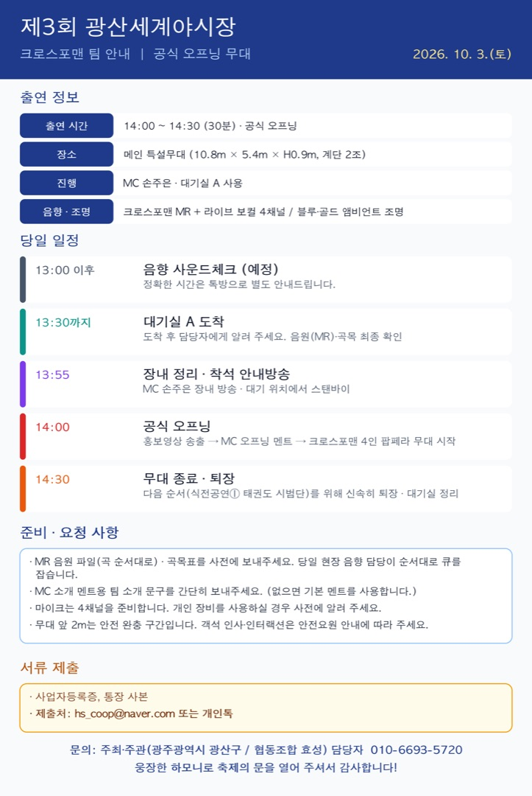

이미지를 누르면 크게 볼 수 있고, 길게 눌러 저장할 수 있습니다.
크로스포맨 팀께서는 올해 축제의 문을 여는 공식 오프닝 무대를 맡아 주십니다.
10월 3일(토) 일정과 준비 사항을 안내드립니다. (첨부 이미지 참고)
출연 정보
- 일시: 2026. 10. 3.(토) 14:00 ~ 14:30 (30분) · 공식 오프닝
- 장소: 광산구 월곡동 목련로 메인 특설무대 (10.8m × 5.4m × H0.9m, 계단 2조)
- 진행: MC 손주은 / 대기실 A 사용
- 음향·조명: 크로스포맨 MR + 라이브 보컬 4채널 / 블루·골드 앰비언트 조명
당일 일정
- 13:00 이후 음향 사운드체크 예정 (정확한 시간은 톡방으로 별도 안내드립니다.)
- 13:30까지 대기실 A 도착 → 담당자에게 도착 알림, 음원(MR)·곡목 최종 확인
- 13:55 장내 정리·착석 안내방송 (MC 손주은) / 대기 위치에서 스탠바이
- 14:00 공식 오프닝: 홍보영상 송출 → MC 오프닝 멘트 → 크로스포맨 4인 팝페라 무대 시작
- 14:30 무대 종료·퇴장 (다음 순서 식전공연① 태권도 시범단을 위해 신속히 퇴장, 대기실 정리)
준비·요청 사항
- MR 음원 파일(곡 순서대로)과 곡목표를 사전에 보내주세요. 당일 현장 음향 담당이 순서대로 큐를 잡습니다.
- MC 소개 멘트용 팀 소개 문구를 간단히 보내주세요. (없으면 기본 멘트를 사용합니다.)
- 마이크는 4채널을 준비합니다. 개인 장비를 사용하실 경우 사전에 알려 주세요.
- 무대 앞 2m는 안전 완충 구간입니다. 객석 인사·인터랙션은 안전요원 안내에 따라 주세요.